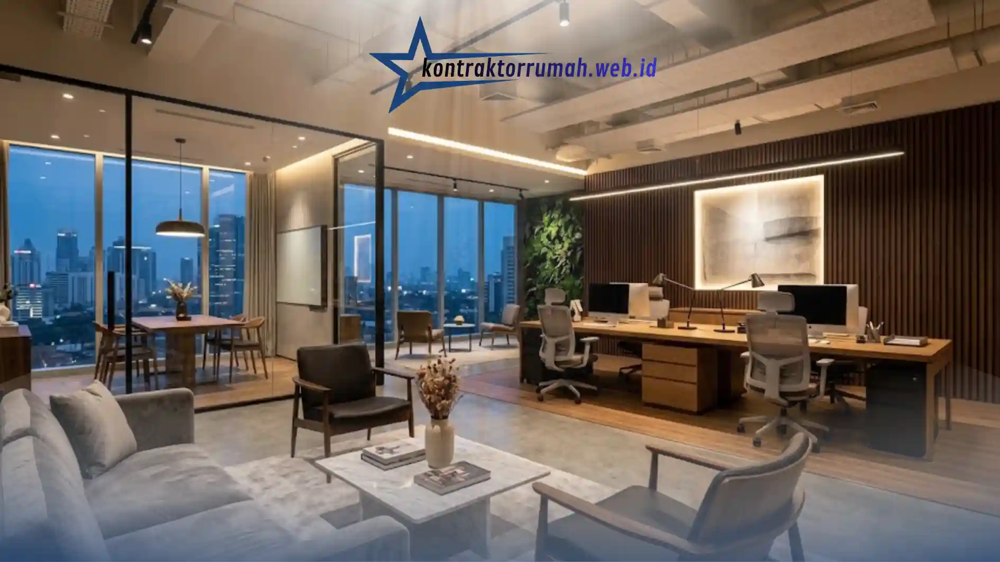

Jasa renovasi ruko menjadi kantor minimalis modern mencakup perubahan tata ruang, sistem pencahayaan, dan elemen interior agar bangunan komersial lebih fungsional sebagai ruang kerja. Prosesnya melibatkan perencanaan desain, pembongkaran sebagian struktur, hingga finishing interior.
Poin Penting
- Renovasi ruko menjadi kantor memerlukan perencanaan tata ruang yang matang sejak awal.
- Gaya minimalis modern menekankan efisiensi ruang, garis bersih, dan pencahayaan alami.
- Tahapan kerja meliputi survei, desain, pembongkaran, konstruksi ulang, dan finishing.
- Estimasi biaya sangat bervariasi tergantung luas bangunan dan tingkat perubahan struktur.
- Memilih jasa renovasi yang berpengalaman membantu meminimalkan risiko keterlambatan dan pembengkakan biaya.
Mengapa Ruko Sering Dialihfungsikan Menjadi Kantor?
Ruko sering dialihfungsikan menjadi kantor karena lokasinya yang strategis di area komersial, aksesibilitas yang baik, serta struktur bangunan yang relatif fleksibel untuk diubah tata ruangnya. Banyak pelaku usaha memilih ruko dibandingkan menyewa gedung perkantoran karena biaya operasional yang cenderung lebih efisien dalam jangka panjang.
Selain itu, ruko umumnya memiliki lebih dari satu lantai sehingga dapat dibagi menjadi beberapa zona fungsi, seperti area resepsionis, ruang kerja staf, ruang rapat, hingga area penyimpanan dokumen, tanpa memerlukan perluasan lahan.
Apa Saja Tahapan Renovasi Ruko Menjadi Kantor Minimalis?
Tahapan renovasi ruko menjadi kantor minimalis umumnya dimulai dari survei kondisi bangunan, dilanjutkan dengan perencanaan desain, proses konstruksi, hingga tahap finishing interior.
Pada tahap survei, tim jasa renovasi akan memeriksa kondisi struktur bangunan, sistem kelistrikan, dan sirkulasi udara untuk menentukan bagian mana yang perlu diperkuat atau diubah. Tahap ini penting untuk memastikan renovasi tidak mengganggu kekuatan struktur utama bangunan.
Setelah survei, tim desain akan menyusun konsep tata ruang yang disesuaikan dengan kebutuhan operasional kantor, termasuk penempatan partisi, jalur sirkulasi karyawan, dan zona kerja kolaboratif. Tahap konstruksi kemudian mencakup pembongkaran elemen yang tidak diperlukan, pemasangan partisi baru, serta penyesuaian instalasi listrik dan pencahayaan. Tahap akhir berupa finishing interior, seperti pengecatan, pemasangan lantai, dan penempatan furnitur sesuai konsep minimalis yang telah disepakati.
Apa Ciri Khas Desain Kantor Minimalis Modern?
Desain kantor minimalis modern ditandai dengan penggunaan garis bersih, palet warna netral, dan pemanfaatan pencahayaan alami secara maksimal. Konsep ini mengutamakan fungsi ruang tanpa elemen dekoratif berlebihan.

Beberapa ciri khas yang umum diterapkan meliputi penggunaan partisi kaca untuk memberi kesan luas, pemilihan furnitur multifungsi untuk efisiensi ruang, dan tata letak terbuka yang mendukung kolaborasi antar tim kerja. Pemilihan material seperti kayu natural, beton ekspos, atau logam dengan finishing matte juga sering digunakan untuk memperkuat nuansa modern namun tetap hangat secara visual.
Pencahayaan menjadi elemen krusial dalam desain minimalis, baik melalui optimalisasi jendela alami maupun pemasangan lampu LED dengan pencahayaan merata untuk mendukung kenyamanan kerja jangka panjang.
Apa Saja Faktor yang Mempengaruhi Estimasi Biaya Renovasi?
Estimasi biaya renovasi ruko menjadi kantor dipengaruhi oleh beberapa faktor utama, seperti luas bangunan, tingkat perubahan struktur, kualitas material, dan kompleksitas sistem mekanikal-elektrikal yang dipasang.
Renovasi yang hanya mencakup perubahan interior tanpa mengubah struktur bangunan umumnya membutuhkan biaya yang lebih rendah dibandingkan renovasi yang melibatkan perubahan tata letak dinding atau penambahan lantai. Pemilihan material finishing, seperti jenis lantai, cat, dan partisi, juga turut memengaruhi total anggaran secara signifikan.
Untuk mendapatkan gambaran biaya yang akurat, pemilik usaha disarankan meminta Rencana Anggaran Biaya (RAB) terperinci dari jasa renovasi yang dipilih, sehingga setiap komponen biaya dapat ditelusuri dengan jelas sebelum pekerjaan dimulai.
Bagaimana Cara Memilih Jasa Renovasi yang Tepat?
Memilih jasa renovasi yang tepat dapat dilakukan dengan memeriksa portofolio proyek sebelumnya, memastikan adanya kontrak kerja tertulis, serta menilai kejelasan komunikasi selama proses konsultasi awal.
Pemilik usaha sebaiknya meminta contoh hasil kerja sebelumnya yang memiliki kemiripan konsep, sehingga dapat menilai konsistensi kualitas dan gaya desain yang ditawarkan. Selain itu, penting untuk memastikan jasa renovasi memberikan RAB yang transparan dan jadwal pengerjaan yang realistis, agar tidak terjadi keterlambatan yang berdampak pada operasional usaha.
Komunikasi yang responsif selama proses konsultasi juga menjadi indikator penting, karena renovasi bangunan komersial biasanya memerlukan penyesuaian desain di tengah proses pengerjaan sesuai kebutuhan operasional yang berkembang.
Renovasi ruko menjadi kantor minimalis modern memerlukan perencanaan matang mulai dari survei struktur, desain tata ruang, hingga pemilihan material finishing yang sesuai kebutuhan operasional usaha. Dengan memilih jasa renovasi yang berpengalaman dan transparan dalam hal RAB serta jadwal kerja, pemilik usaha dapat memperoleh ruang kantor yang fungsional, nyaman, dan sesuai anggaran yang direncanakan.